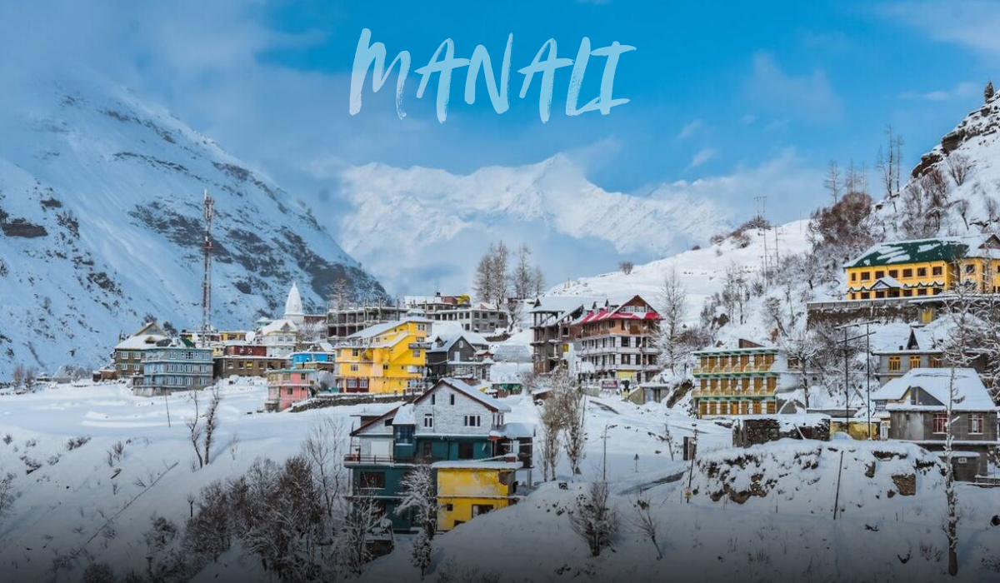
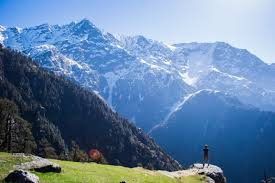
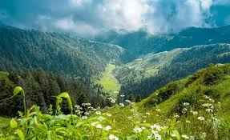

Shimla

The capital and a popular colonial-era hill station known for its charming architecture, The Ridge, Mall Road, and the scenic toy train ride on the UNESCO World Heritage Kalka-Shimla Railway.
Manali

A major tourist destination nestled in the Beas River Valley, famous for its adventure sports, Hadimba Devi Temple, Solang Valley, and as a gateway to Spiti and Ladakh.
Dharamshala & McLeod Ganj

Often referred to as 'Little Lhasa', it is the home of the Dalai Lama and the Tibetan government-in-exile. It is a hub for Tibetan Buddhist culture, featuring monasteries and trekking trails.
Spiti Valley

A cold desert mountain valley known for its remote, stark, and stunning landscapes, ancient Buddhist monasteries (like Key Monastery), and challenging trekking routes.
Dalhousie

A charming hill station known for its colonial-era architecture, beautiful churches, and its proximity to Khajjiar, often nicknamed the 'Mini Switzerland of India'.